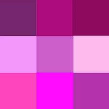
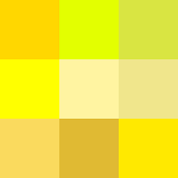
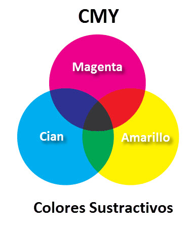

Practica 05
Nerea Álvarez Justel - nerea.alvjus@educa.jcyl.es
1. Al hacer clic sobre cada imagen se tienen que intercambiar, es decir, si haces clic sobre la primera imagen tiene que aparece en el sitio de la primera imagen, la segunda imagen y así con todas. Qué imagen se cambia por cual, establécelo tu. Intenta que la lógica del ejercicio sea lo más sencilla posible y recuerda que no puede visualizarse nunca una imagen dos veces.
  
2. Añade a tu documento HTML, un input y un textarea. Cuando el usuario escriba un texto en estos dos elementos,
muestra el texto que ha escrito en el propio documento HTML a modo de resumen visualizando también el código de cara carácter.
Cuando el usuario intente seleccionar el texto en ambos elementos, debes de mostrarle un texto alertándolo de que puede perder información.
Si el usuario cambia el texto inicial que estaba (A B C D), debe de aparecer información por pantalla informando de esto y visualizando el nuevo contenido.
Añade un botón “Enviar” y un botón “Reset” a tu documento HTML y cuando se pulsen se lancen los diferentes eventos relacionados (submit y reset).
3. Añade un input a tu documento HTML, cuando el usuario esté escribiendo en el input, debe de aparecer el texto que ha escrito en minúsculas. Cuando el usuario se salga del input debe cambiarse este texto (sea el que sea) a mayúsculas. Si el usuario vuelve a entrar al input a cambiar algo, debe de aparecer otra vez en minúsculas.
4. Añade a las imágenes del principio la funcionalidad de que cuando el usuario este encima de una imagen, esta imagen se visualice con un borde negro. Hazlo con todas las imágenes.
5. Añade un párrafo al documento HTML que al ponerse encima de el, se cambie el color de la fuente a verde y cuando el usuario quite el ratón de ahí el color de la fuente pase a negro..
Texto para cambio de color